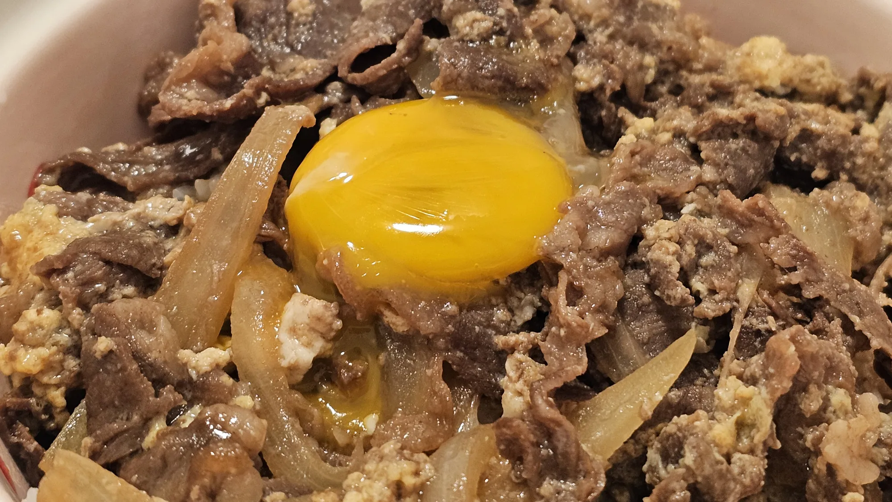

// Recipe · Japanese rice bowl
Gyudon

Sweet-savory beef and onion simmered with soy sauce and mirin, finished with a softly set egg and a raw yolk on top of rice.
Ingredients
- ½ onion
- Eggs
- Olive oil
- Thinly sliced beef for shabu-shabu (any thinly sliced meat works!)
- Enoki mushrooms (optional)
- Soy sauce
- Mirin
- Oligosaccharide syrup (Korean rice syrup)
- Cooked rice, to serve
Steps
- Slice half an onion — not too thin.
- Coat a frying pan with olive oil.
- Add the onion and sauté until translucent.
- Add the beef, plus enoki mushrooms if you like.
- Once the meat is mostly cooked, pour in some water (as much as you like).
- Season with soy sauce, mirin, and syrup in a 3 : 4 : 1 ratio, then adjust the rest of the seasoning with soy sauce.
- When it’s nearly done, pour a beaten egg over the top in a circle. Don’t stir — leave it alone until it’s mostly set.
- When everything is cooked, spoon it over rice and top with a separated egg yolk.